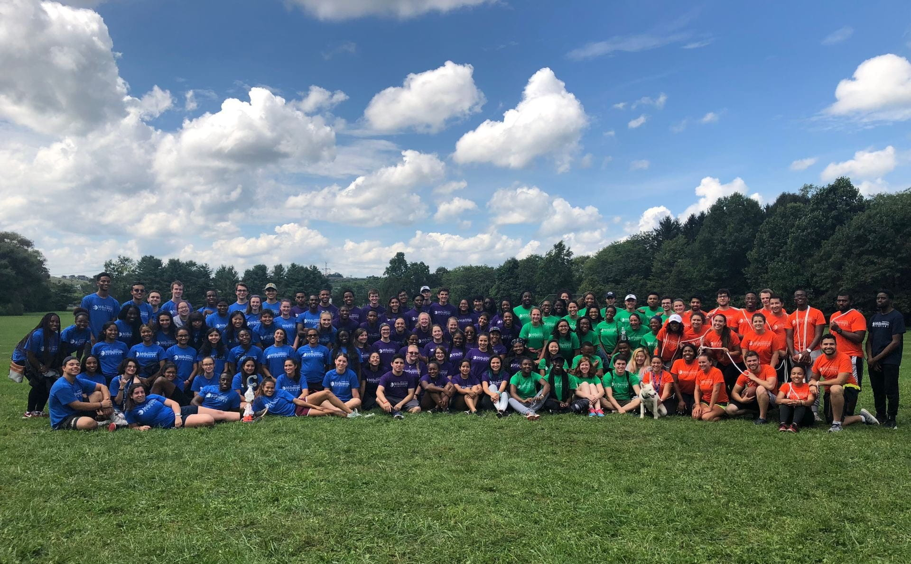
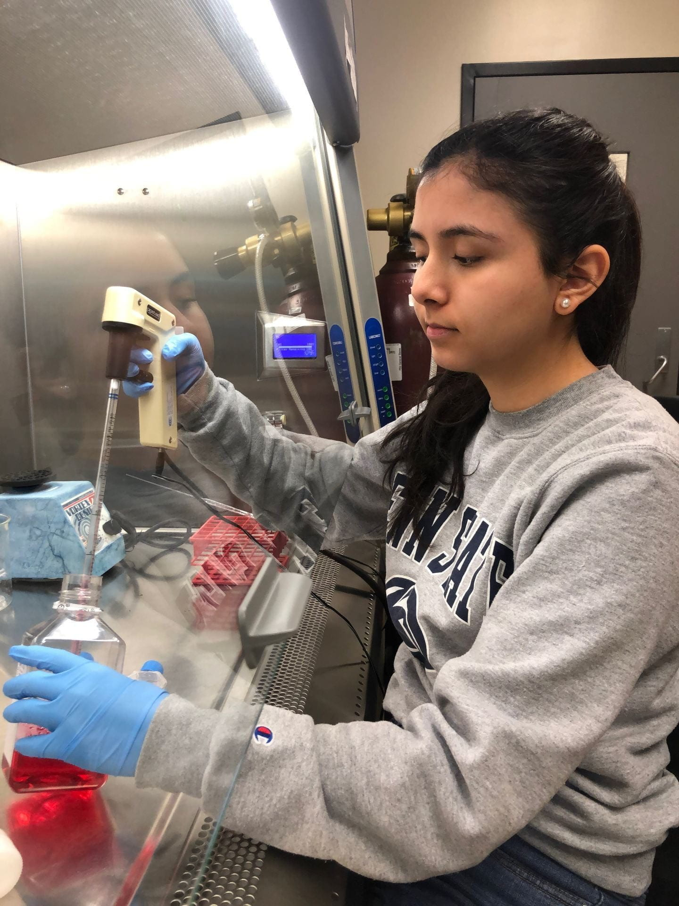

PENN STATE · MILLENNIUM SCHOLARS PROGRAM
WE ARE
MILLENNIUM.
Driven by discovery. Strengthened by community.
Preparing the next generation of STEM leaders at Penn State.

Find your place.
Discover the program & application process.
02 / I'M A SCHOLARScholar resources ↗Find expectations, research & support.
03 / I'M CONNECTEDThe MSP community ↗For families, alumni & supporters.

DISCOVERY IN ACTION / PENN STATE MSPMORE THAN A SCHOLARSHIP
The support to thrive.
The freedom to discover.
Penn State ambition. Millennium support.
The Millennium Scholars Program supports high-achieving students in science, technology, engineering, and mathematics as they prepare to become leaders in their fields and advance diversity in STEM.
With academic, professional, social, and financial support, scholars build the foundation for advanced degrees, meaningful research, and lasting impact.
Get to know the program →BUILT FOR YOUR POTENTIAL
A foundation for what comes next.
Summer Bridge
Begin with an intensive six-week experience that connects you to Penn State and your fellow scholars.
Explore Summer Bridge →02 / REAL DISCOVERYResearch that matters
Work alongside leading STEM researchers and build experience through academic-year and summer research.
Meet faculty mentors →03 / SHARED POSSIBILITYA world of opportunity
Find your academic path through the program's participating colleges and prepare for an advanced degree.
Find your college →AMBITIOUS MINDS. LIFELONG CONNECTIONS.
Go further.
Grow together.
Find a network of high-achieving scholars, build lifelong friendships, and contribute to society through world-class research.
Meet our scholars ↗YOUR FUTURE STARTS HERE
Make your next move.
Explore the application process and find out how to become a Millennium Scholar.
Application details ↗LET'S CONNECT
Your questions. Our people.
We're here to help you find your next step.